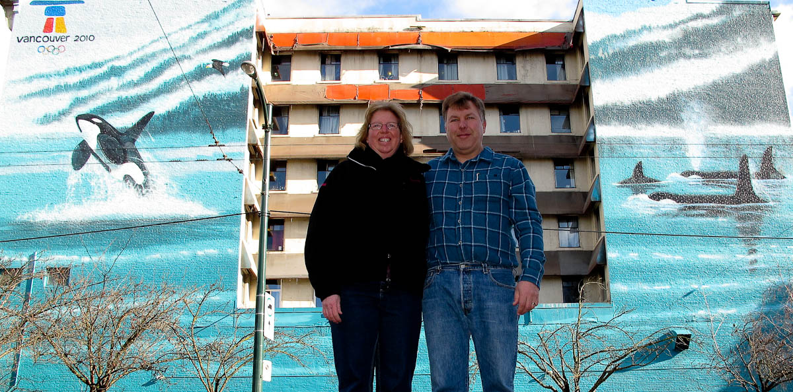

After the disappointment on Melville Street I was a little concerned. Of the last 4 walls we’ve visited, 3 were extinct and 1 was so covered up by new construction you can barely see it. The wall on Grandville was interesting because it was painted in only 12 hours as a continuation of the mural at the aquarium. In trying to find the wall on Google Maps it was very difficult to get an angle where I could see the wall so we we’re unsure where it should be, even though we had an address.
After looking everywhere around 1290 Grandville, the address listed everywhere on the web for the building it is painted on and finding nothing we expanded our search to find the wall painted on 1390 Grandville. Goes to show you can’t believe everything you see on the web!
The wall is in remarkably good shape and it looks like it was refreshed for the 2010 Olympics in Vancouver. The wall was positioned so that it would be seen as you drive into Vancouver on the Granville bridge.